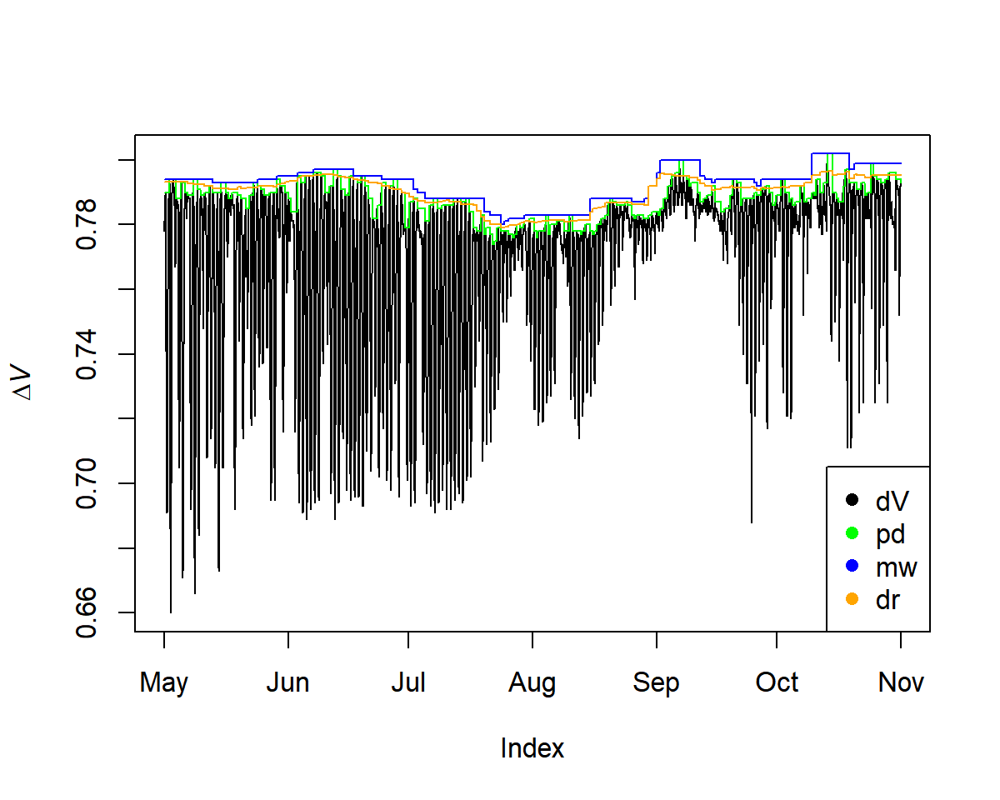

Please note, that TREX is currently under development. More information will be added in due time.
TREX allows to assimilate, process and analyse on sap flow data obtained with the thermal dissipation method (TDM). The package includes functions for gap filling time-series data, detecting outliers, calculating data-processing uncertainties and generating uniform data output and visualisation. The package is designed to deal with large quantities of data and apply commonly used data-processing methods. The functions have been validated on data collected from different tree species across the northern hemisphere (Peters et al. 2018 <doi: 10.1111/nph.15241>).
1. Installation
A development version of TREX can be installed and used via
remotes::install_github("the-Hull/TREX")
library(TREX)2. Basic use and workflow
Load data
# load raw data
raw <- is.trex(example.data(type="doy"),
tz="GMT",
time.format="%H:%M",
solar.time=TRUE,
long.deg=7.7459,
ref.add=FALSE)
# adjust time steps
input <- dt.steps(input=raw,
start="2013-05-01 00:00",
end="2013-11-01 00:00",
time.int=15,
max.gap=60,
decimals=10,
df=FALSE)
# remove obvious outliers
input[which(input<0.2)]<- NA
Calculate maximum ΔT-Values
Three methods can be applied to calculate ΔT (or ΔV for voltage differences between TDM probes):
-
pd: pre-dawn -
mw: moving-window -
dr: double-regression
input <- tdm_dt.max(input,
methods = c("pd", "mw", "dr"),
det.pd = TRUE,
interpolate = FALSE,
max.days = 10,
df = FALSE)
plot(input$input, ylab = expression(Delta*italic("V")))
lines(input$max.pd, col = "green")
lines(input$max.mw, col = "blue")
lines(input$max.dr, col = "orange")
Calculate Sap Flux Density
output.data<- tdm_cal.sfd(input,make.plot=TRUE,df=FALSE,wood="Coniferous")
plot(output.data$sfd.pd$sfd[1:1000, ], ylim=c(0,10))
# see estimated uncertainty
lines(output.data$sfd.pd$q025[1:1000, ], lty=1,col="grey")
lines(output.data$sfd.pd$q975[1:1000, ], lty=1,col="grey")
lines(output.data$sfd.pd$sfd[1:1000, ])
sfd_data <- output.data$sfd.dr$sfd

Generate Outputs
Here we generate outputs based on environmental filters and calculate crown conductance (Gc) values.
output<- out.data(input=sfd_data,
vpd.input=vpd,
sr.input=sr,
prec.input=preci,
low.sr = 150,
peak.sr=300,
vpd.cutoff= 0.5,
prec.lim=1,
method="env.filt",
max.quant=0.99,
make.plot=TRUE)
3. More on TREX
Workshops using TREX
-
ESA 2020:
TREXwas introduced and demonstrated in detail in a workshop during the Ecological Society of America’s 2020 AGM. The workshop description can be found here, and all materials on the dedicated page.